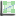

6. Image Plotting Tools (2D)¶
Images have a range of tools such as zooming and
The image plotting tools appear automatically when an image (two-dimensional data array) is plotted. You can choose an image tool by going to the tool action menu:

and choosing the kind of tool you would like. The follow section details with what each of the tools do.
NOTE All tools which use regions like lines, boxes and sectors may be run with multiple regions. Many lines for instance may be drawn by the line profile tool. To add another region click the button for the tool again.
6.1. Color Mapping¶
The colour mapping tool is used to adjust how the values of intensity are coloured. The colours are assigned within a maximum and minimum value for intensity. There are also minimum and maximum cut values, outside these ranges and a value is considered bad and has a special colour. For instance dead pixels blue and zingers red.
Imagining the plotting the intensities with a normal distribution the colour range of the palette and cut offs is given by:
Pressing the ‘h’ key with the plot selected will result in the current max and min for the colour range being reset.
On the graph tool bar there is a button labelled ‘Configure Settings...’ :
This opens a dialog with the tabbed pane ‘Image Traces’ which allows one to choose a mean based or median based assignment for the max and min values.
On the color mapping tool, you may click in the ‘Histogram Plot’ to move the intensity range manually. The blue area selected represents the active range of intensities.
6.2.  Pixel Information¶
Pixel Information¶
Pixel infomation shows the pixel position and its intensity as you move the mouse over the image. In addition you may click add points which report the same position. The tool (which works better wide and short in size to avoid scrolling) also reports q, theta and resolution providing the meta-data can be read out of the original image.
6.2.1. Toolbar of Pixel Information¶
The toolbar of Pixel Information contains actions which apply to vertices (points created when you click). They can be deleted or have labels turned on and off.
6.3. Profile Tools¶
The profile tools are used to convert 2D image data into 1D trace data (exluding the zoom profile tool), and so have many common features. A brief description of the profile tools and there common features is given below.
On opening a profile tool, the mouse action automatically changes to draw the appropriate region of interest (ROI, line for line profile, sector for radial integration). Drawing the ROI produces a trace plot in the plot view on the profile tool tab. All the profile tool tabs have an action button to allow a new ROI to be added to the image plot. Multiple ROIs can be added, and the profile traces compared. Once an ROI is draw it can be modified by dragging the whole ROI or any of its vertices.
The 1D trace data produced by the profile tools can be further analysed using any of the plot view tools (zoom, pan.... or 1D tools (peak fitting, derivative...) described previous sections.
6.3.1.  Line Profile¶
Line Profile¶
The line profile tool extracts the intensity along a line.
6.3.2. Cross Hair Profile¶
The cross hair profile tool changes the mouse pointer to a cross hair spanning the entire image. A live update of the horizontal and vertical intensity profiles is shown in the profile tool plot view. If the image is clicked, a copy of the crosshair profile is left static on the image and the associated profile traces stay plotted.
6.3.3.  Box Profile¶
The box profile tool is the integral of vertical and horizontal intensities of a box drawn on the image.
6.3.4. Sector (Radial/Azimuthal) Profiles¶
The radial and azimuthal profile tools work with sector ROIs and show the integral of the radial or azimuthal intensities of the sector drawn on the image.
Both the profile plot views on these tools also have some additional actions specific to the sector ROIs:
- Centre Sector: Centres the sector to the centre of the image (or the beam centre if the image has diffraction metadata – which can be created/edited using the diffraction tool)
- Symmetry Settings: Automatically creates another sector, tied to the initial sector, and related in symmetry.
- Combine Symmetry: Displays the sum of the symmetry-related profile traces rather than two individual traces.
The Radial profile tool has two additional actions. If the image has diffraction metadata the sector can be locked to this data (automatically centring the sector on the beam centre). This makes the sector un-editable. When locked, the profile may be plotted against d, 2 theta, q as well as pixel.
6.3.5. Zoom Profile¶
The zoom profile tool is different from the other profile tools in that it shows a 2d image of a subregion of the original image. The subregion is selected by a box ROI. This ROI can be dragged and resized and the zoomed profile will update accordingly. The contrast of the zoomed area is also automatically corrected when the ROI is moved. This tool is especially good for studying fine structure in large high resolution images.
6.4. Masking¶
The masking tool allows artefacts to be selected in an image so they can be ignored in further processing steps. For example, masking out the beam stop shadow in a powder diffraction image means those pixels wont be included when the data is reduced using the radial integration tool.
Masking can performed in two ways:
- By thresholding out the upper or lower values
- By selecting areas using regions of interest (ROI)
6.4.1. Masking Tool Actions¶
- Save the mask into a buffer: allows the mask from one image to be used in another
- Merge the previously saved mask from buffer with this mask (if any)
- Auto save the mask to the buffer when it changes
- Add annotation to the image
- Configure...: A shortcut to the image plot view plotting configuration
6.5. Ellipse Fitting¶
The ellipse fitting tool is used to draw an elliptical region on the image plot view. The parameters of the ellipse (centre, major semi-axis length....) are shown in the ellipse fitting tool tab.
An ellipse region is produced by clicking on the image to place point markers. When four markers are placed a live ellipse outline is shown on the image. Double clicking the final marker down finishes the fit. The final ellipse can be modified by clicking and dragging any of the point markers.
6.5.1. Ellipse Fitting Tool Actions¶
The ellipse fitting tool only has one toolbar action, remove region, which removes the selected region from the plot and table.
6.6. Image History¶
The Image History tool allows data from different images (of the same dimensions) to be mathematically combined and displayed. It always opens in a dedicated window, since this is required to allow interaction with different plot views showing different data sets.
Selecting the history tool opens the history tab which contains the history actions and a table where images added to the history are displayed.
The table in the Image History Tool tab allows the images to be selected for combination and, using the Operator option (+, -,*, /) how they are to be combined.
6.6.1. Image History Tool Actions¶
- Include current plot: Toggles whether the currently shown image is included in the combined image
- Revert plot: Undoes any processing
- Move up: moves the selected image up in the table
- Move down: moves the selected image down in the table
- Add Image to the compare table
- Delete selected
- Clear History
- Rename selected
6.7. Diffraction¶
The Diffraction Tool is specific to diffraction imaging data, and can be used to view, edit or generate diffraction metadata (information about a diffraction experiment required to extract useful information from the image).
The experimental parameters shown in the diffraction tool tab are either editable (black) or un-editable (brown). Most values can be displayed in various units.
The Diffraction Tool can be used in combination with the radial profile tool to extract diffraction traces (intensity vs d/2 theta/q) from images.
If an image has no stored diffraction data it is created when the diffraction tool is opened.
6.7.1. Diffraction Tool Actions¶
- Lock the diffraction data and apply it to newly opened files: especially useful when used to set up diffraction data for multiple images from one calibration image
- Show resolution rings: Displays standard, ice and calibrant rings, as well as the beam center. These rings are only correct if the diffraction metadata is correct.
- Calibrants: Allows the specific material used as a calibrant to be selected
- One click beam centre: Allows the beam centre to be set by clicking on the image
- Refine beam centre: Experimental – follow instructions after clicking action
- Reset selected field
- Reset all fields